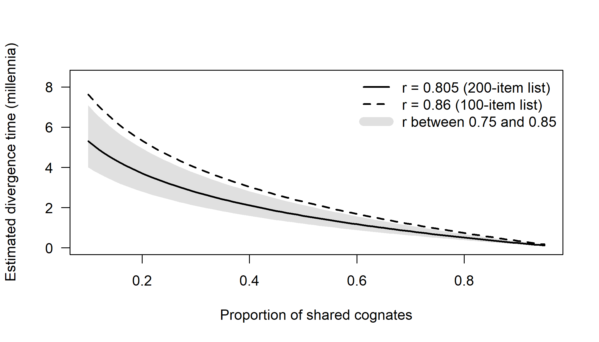

Chapter 1 Language Trees: History and Motivation
The idea that languages form family trees is more than a century and a half old, older in its explicit form than Darwin’s tree of life. For most of that time the tree was drawn by expert judgement, and the one serious attempt to compute it, glottochronology, collapsed under its own assumptions. Since about 2000, methods borrowed from evolutionary biology have made it possible to infer language trees, and their dates, from large datasets with explicit statements of uncertainty. This chapter asks why the tree became the central metaphor of historical linguistics, why the first quantitative attempt failed, and what the second attempt does differently. The answers set up the questions that run through the whole book: what a tree of languages represents, what evidence can support it, and how far a statistical model of language change can be trusted.
After reading this chapter you should be able to:
- Outline the history of the family-tree model from Jones and Schleicher to the computational studies of the 2000s, and explain Darwin’s use of the linguistic analogy.
- Contrast the tree model with Schmidt’s wave model, and say what kind of linguistic evidence favours each.
- Explain why the comparative method subgroups by shared innovations, and relate this principle to Hennig’s synapomorphies.
- Derive the glottochronological dating formula from its assumptions and identify which assumption failed empirically.
- Explain why agreement between a computational tree and a traditional classification is not independent validation of either.
- Evaluate where the analogy between biological and linguistic evolution holds and where it breaks down.
- List the questions phylogenetic methods can address, and the one they cannot (whether languages are related at all).
1.1 Before the tree: the discovery of language families
The observation that some languages resemble each other is ancient, but the systematic study of language relationships began in the late eighteenth and early nineteenth centuries. In a famous lecture delivered in Calcutta in 1786, the British judge and orientalist Sir William Jones remarked that Sanskrit bore to Greek and Latin a stronger affinity, “both in the roots of verbs and in the forms of grammar”, than could have been produced by accident, so that no philologer could examine the three without believing them to have sprung from some common source which perhaps no longer existed. He suggested that Gothic, Celtic and Old Persian might belong to the same family. Similar observations had been made before Jones, but his formulation was influential, and its key elements anticipate much of what followed: the comparison of grammar as well as vocabulary, the argument from the improbability of chance resemblance, and the inference of an unattested common ancestor.
In the decades after Jones, scholars such as Rasmus Rask, Jacob Grimm and Franz Bopp laid the foundations of comparative Indo-European grammar. Grimm’s formulation of the consonant correspondences between Germanic and the other Indo-European languages (now known as Grimm’s law) showed that the differences between related languages were not random but followed systematic patterns. Latin pater, tres and cornu correspond to English father, three and horn; in each case a Latin voiceless stop (p, t, k) corresponds to a Germanic fricative (f, th, h). By the middle of the nineteenth century the Indo-European family was firmly established, and by its end the main branches (Indo-Iranian, Greek, Italic, Celtic, Germanic, Baltic, Slavic, Armenian and Albanian) were recognized; Anatolian and Tocharian were added in the early twentieth century, when their texts were identified and deciphered (Fortson 2010).
What these early comparativists did not yet have was an explicit model of how the branches related to one another, or of what kind of process produced them. The organizing metaphor of the family (mother and daughter languages, sister languages) was present from the start, but it was August Schleicher who turned it into a diagram.
1.2 Schleicher and the Stammbaum
August Schleicher (1821–1868) was a botanist by inclination and a linguist by profession, and he regarded languages as natural organisms that are born, grow, age and die. He began drawing branching diagrams of Indo-European in the early 1850s (Schleicher 1853), and his Compendium of Indo-European comparative grammar presented a Stammbaum (“family tree”) in which Proto-Indo-European split successively into a hierarchy of intermediate proto-languages and finally into the attested branches (Schleicher 1861). Figure 1.1 shows a simplified version.
schleicher <- read.tree(text = paste0(
"((Germanic,(Lithuanian,Slavic)Balto-Slavic)Slavo-Germanic,",
"(((Greek,Albanian)Greek-Albanian,(Italic,Celtic)Italo-Celtic)",
"Graeco-Italo-Celtic,(Iranian,Indic)Aryan)Aryo-Graeco-Italo-Celtic)",
"Indo-European;"))
plot(schleicher, use.edge.length = FALSE, node.depth = 2,
label.offset = 0.1, cex = 0.95, x.lim = c(-1.1, 5.4))
# each subgroup name sits on its stem branch, on the side away from the parent's
# vertical line (above for upper daughters, below for lower ones); the root name
# sits to the left of the root
lp <- get("last_plot.phylo", envir = .PlotPhyloEnv)
nn <- Ntip(schleicher) + seq_len(Nnode(schleicher))
up <- lp$yy[nn] >= lp$yy[schleicher$edge[match(nn, schleicher$edge[, 2]), 1]]
for (i in seq_along(nn)) {
a <- if (i == 1) c(1.08, 0.5) else
if (up[i]) c(1.03, -0.45) else c(1.03, 1.45)
nodelabels(schleicher$node.label[i], nn[i], frame = "none", cex = 0.72,
adj = a, col = "grey30")
}Figure 1.1: A simplified rendering of the Indo-European family tree published by August Schleicher in the early 1860s, with labels translated into English. Schleicher grouped Germanic with Balto-Slavic, and Greek (with Albanian) with Italic and Celtic, as sisters of Indo-Iranian (his “Aryan”). Branch lengths are schematic.
Several features of Schleicher’s tree survive in modern phylogenetics. It is a rooted, bifurcating tree whose internal nodes are explicitly reconstructed ancestors. Its branch lengths were meant to suggest time: the earlier a lineage split off, the longer its branch. And it was accompanied by an explicit methodology of reconstruction. Schleicher was the first to reconstruct Proto-Indo-European forms systematically, marking them with an asterisk, and in 1868 he even composed a short fable in his reconstructed language. Other features have not survived. Schleicher’s particular higher-level groupings, such as the union of Germanic with Balto-Slavic, are not part of the modern consensus, and the modern view of what subgroups require (shared innovations, discussed below) postdates him.
Schleicher read Darwin’s On the Origin of Species (Darwin 1859) in its German translation soon after it appeared, and in 1863 he published an open letter to the zoologist Ernst Haeckel, Die Darwinsche Theorie und die Sprachwissenschaft (“Darwinian theory and the science of language”), arguing that Darwin’s theory of descent with modification was already familiar, in substance, to linguists, who had long observed the gradual divergence of languages from common ancestors (Schleicher 1863). The letter is one of the first explicit statements of the parallel between biological and linguistic evolution, and it included a tree diagram of Indo-European.
1.2.1 Darwin’s linguistic analogy
The influence ran in both directions. Darwin used language repeatedly to make the idea of descent intuitive. In the chapter of the Origin on classification, he argued that a genealogical arrangement is the natural way to classify, and illustrated the point with languages: if we possessed a perfect pedigree of mankind, he wrote, a genealogical arrangement of human groups would afford the best classification of the languages spoken throughout the world, and if all extinct languages and all intermediate dialects were included, such an arrangement would be the only possible one (Darwin 1859). The same chapter compares rudimentary organs to letters retained in the spelling of a word but no longer pronounced. In The Descent of Man, Darwin developed the analogy further, observing that “the formation of different languages and of distinct species, and the proofs that both have been developed through a gradual process, are curiously the same” (Darwin 1871). The geologist Charles Lyell, in a book published in 1863, devoted a chapter to the comparison between the origin of languages and of species (Lyell 1863). The intellectual history of these exchanges has been traced in detail by Alter (1999), and their relevance to modern phylogenetics by Atkinson and Gray (2005).
It is worth emphasizing that the language-species analogy was, in the nineteenth century, mostly an argument by illustration. Darwin used languages because his readers already accepted that languages had diverged gradually from common ancestors, and he could then ask them to extend the same reasoning to species. Neither Darwin nor Schleicher had a method for inferring trees from data, beyond expert judgement. That would come a century later, and would come from biology.
1.3 Trees versus waves
Schleicher’s tree was challenged almost immediately. Johannes Schmidt, one of his students, argued in 1872 that the relationships among the Indo-European branches could not be represented as a tree at all (Schmidt 1872). Schmidt observed that the branches shared innovations in overlapping, crisscrossing patterns. Slavic shares some features with Indo-Iranian, others with Germanic; Greek shares some with Indo-Iranian, others with Italic. No tree can accommodate all of these groupings as clades. Schmidt proposed instead that innovations spread outward from different centres within an originally continuous dialect area, like waves from stones dropped into a pond, each covering a different, partly overlapping territory. This is the Wellentheorie or wave theory. Its natural representation is not a tree but a map of overlapping isoglosses, the boundaries of the areas in which particular innovations are found (Figure 1.2). Hugo Schuchardt made similar arguments, and the rise of dialect geography at the end of the nineteenth century, which revealed that every feature in a dialect landscape has its own geographic distribution, seemed to confirm that languages do not split cleanly.
pos <- data.frame(
lang = c("Celtic", "Italic", "Germanic", "Balto-Slavic", "Albanian",
"Greek", "Armenian", "Indo-Iranian", "Tocharian", "Anatolian"),
x = c(1, 1.5, 3, 5.5, 3.8, 3.5, 6, 8, 9.5, 6),
y = c(6, 4, 7.5, 7, 4.2, 2.5, 3.2, 4.5, 7.5, 1.2))
# rounded outline around the language labels
blob <- function(langs, pad, lty) {
p <- pos[pos$lang %in% langs, ]
hw <- strwidth(p$lang, cex = 0.8, font = 2) / 2 # half-width of each label
hh <- strheight(p$lang, cex = 0.8, font = 2) / 2
ang <- seq(0, 2 * pi, length.out = 25)[-25]
pts <- do.call(rbind, lapply(seq_len(nrow(p)), function(i) {
cx <- p$x[i] + c(-1, 1, 1, -1) * hw[i]
cy <- p$y[i] + c(-1, -1, 1, 1) * hh[i]
do.call(rbind, lapply(1:4, function(k)
cbind(cx[k] + pad * cos(ang), cy[k] + pad * sin(ang))))
}))
h <- chull(pts)
polygon(pts[h, 1], pts[h, 2], lty = lty, lwd = 2, border = "grey30")
}
op <- par(mar = c(0, 0, 0, 0))
plot(pos$x, pos$y, type = "n", xlim = c(0, 10.5), ylim = c(0, 8.5),
axes = FALSE, xlab = "", ylab = "", asp = 1)
blob(c("Balto-Slavic", "Albanian", "Armenian", "Indo-Iranian"), 0.5, 1)
blob(c("Germanic", "Balto-Slavic"), 0.25, 2)
blob(c("Greek", "Armenian", "Indo-Iranian"), 0.28, 3)
blob(c("Celtic", "Italic"), 0.3, 4)
blob("Tocharian", 0.3, 4)
blob("Anatolian", 0.3, 4)
text(pos$x, pos$y, pos$lang, cex = 0.8, font = 2)
legend("bottomleft", lty = 1:4, lwd = 2, col = "grey30", bty = "n",
cex = 0.8, legend = c("satem", "dative/instrumental plural in *-m-",
"augment *e-", "mediopassive in *-r"))![A schematic wave-theory diagram of four classic isoglosses among the branches of Indo-European, simplified from the kind of diagram found in handbooks. Satem: the assibilation of the Proto-Indo-European palatal velars. Dative/instrumental plural endings in *-m- rather than *-bh-. The past-tense augment *e-. A mediopassive marked by *-r, found in geographically peripheral branches. The placement of the branches is schematic, and the status of several of these features (especially satem in Albanian) is debated.](01-introduction_files/figure-html/intro-wave-1.png)
Figure 1.2: A schematic wave-theory diagram of four classic isoglosses among the branches of Indo-European, simplified from the kind of diagram found in handbooks. Satem: the assibilation of the Proto-Indo-European palatal velars. Dative/instrumental plural endings in -m- rather than -bh-. The past-tense augment e-. A mediopassive marked by -r, found in geographically peripheral branches. The placement of the branches is schematic, and the status of several of these features (especially satem in Albanian) is debated.
The tension between trees and waves has never been resolved, and it runs through the whole of this book. In one view, articulated by the Neogrammarians and their successors, the tree is the correct model of genealogy, but the evidence for it must be carefully filtered: only shared innovations count as evidence for subgroups, and features spread by contact must be identified and set aside (Campbell 2013). In this view, overlapping isoglosses reflect contact after divergence, or the early stages of the breakup of a dialect continuum, which leave little trace in the final tree. In another view, the wave model is a better representation of how languages actually diversify, especially when a language spreads over an area and its dialects remain in contact as they diverge. Modern proponents of this view, such as Alexandre François and Siva Kalyan, argue that many families, including the Oceanic languages of Vanuatu and much of Polynesia, show patterns of intersecting innovations that no tree can represent, and they have developed quantitative methods (“Historical Glottometry”) to measure the strength of overlapping subgroups (François 2015; Kalyan and François 2018). Leonard Bloomfield’s influential textbook presented both models and the evidence for each (Bloomfield 1933).
Phylogenetic methods take a pragmatic position. Tree-based methods assume a tree but can be checked for how badly the data violate that assumption. Network methods, discussed in Chapters 2 and 8, represent conflicting signals explicitly. And explicit models of borrowing and of dialect continua, still at an early stage, aim to combine the two pictures in a single statistical framework.
1.4 The comparative method and regular sound change
The decisive methodological advance of nineteenth-century linguistics was the comparative method and the principle on which it rests, the regularity of sound change. In 1878, Hermann Osthoff and Karl Brugmann, leaders of the group of young scholars in Leipzig known as the Junggrammatiker (Neogrammarians), declared that sound changes operate according to laws that admit no exceptions, except where other identifiable factors, such as analogy or borrowing, intervene (Osthoff and Brugmann 1878). A sound change, on this view, affects every word in which the relevant sound occurs in the relevant environment, at a particular time in a particular speech community. This regularity hypothesis was controversial (and is still qualified in various ways), but it made possible a rigorous method for establishing relationships and reconstructing proto-languages (Hoenigswald 1960; Fox 1995).
The comparative method works as follows. First, assemble sets of words with similar meanings in the languages being compared. Second, identify recurrent sound correspondences: for example, that Latin p corresponds to Germanic f in word after word (pater/father, piscis/fish, pes, pedis/foot). Third, explain each set of correspondences by reconstructing a proto-sound and a set of regular changes in each daughter language. Fourth, use the reconstructed sounds to reconstruct proto-words, and use the regular changes to distinguish genuine cognates (which obey the correspondences) from chance look-alikes and loanwords (which do not). Fifth, establish subgroups by finding shared innovations: changes that a set of languages underwent together and that therefore point to a period of common development. The Germanic consonant shift is such an innovation, shared by all the Germanic languages and by no other branch, and it is part of the evidence that Germanic is a subgroup.
The emphasis on shared innovations has a precise counterpart in biology. In the 1950s and 1960s, the German entomologist Willi Hennig argued that biological classification should be based on genealogy and that only shared derived characters (synapomorphies) are evidence of common ancestry, whereas shared ancestral characters (symplesiomorphies) are not (Hennig 1966). Hennig’s phylogenetic systematics, or cladistics, became the dominant philosophy of biological classification. The two principles were developed independently, but they express the same logic. A feature inherited from the ancestor of the whole family tells us nothing about subgrouping within it, because it could have been retained in any lineage; only a feature that arose within the family, in the common ancestor of a subset of its languages, identifies that subset as a clade. Brugmann himself stated the principle for linguistic subgrouping in the 1880s (Brugmann 1884).
The comparative method has been extraordinarily successful. It has established dozens of language families, from Uralic and Austronesian to Bantu and Uto-Aztecan, and reconstructed large parts of their proto-languages. It provides the cognate judgements on which almost all lexical phylogenetic analyses depend (Chapter 3). But it has limits. It is laborious and depends on the expertise of specialists. Its results for the higher-level structure of large families are often uncertain or contested, because the innovations defining deep subgroups have been obscured by later change. It offers no principled way of dating proto-languages. And it gives no explicit measure of uncertainty: two experts examining the same data can reach different subgroupings without any formal way to compare the strength of the evidence for each. These limits are the openings through which quantitative methods entered the field.
The parallel between linguistics and biology has a third partner. In the nineteenth century, the philologist Karl Lachmann and others developed methods for reconstructing the history of manuscript copies of a text, a discipline known as stemmatics, by tracing shared copying errors back to lost common exemplars. Shared errors in manuscripts play the same role as shared innovations in languages and synapomorphies in organisms. Phylogenetic software designed for biology has since been applied to manuscript traditions, for instance to the manuscripts of Chaucer’s Canterbury Tales (Barbrook et al. 1998).
1.5 Lexicostatistics and glottochronology
1.5.1 Swadesh’s program
The first systematic attempt to quantify language relationships and to date their divergence was made by the American linguist Morris Swadesh around 1950. His lexicostatistics compared languages by the proportion of cognates they shared on a fixed list of basic meanings, the Swadesh list (Chapter 3), which was designed to contain vocabulary that every language has and that is rarely borrowed (Swadesh 1950, 1952, 1955). Pairs of languages sharing a high proportion of cognates were taken to be closely related, and a classification could be built from the matrix of pairwise percentages. This is, in modern terms, a distance method (Chapter 4).
Glottochronology went further, proposing that the percentage of shared cognates could be converted into a date of divergence. The key assumption was that basic vocabulary is replaced at a constant rate. Robert Lees estimated this rate from a small sample of languages with long written histories, comparing older and modern stages such as Old and Modern English or Latin and its Romance descendants, and found that about 81 per cent of the 200-item list was retained per thousand years (Lees 1953); Swadesh later estimated a retention rate of about 86 per cent per millennium for the 100-item list (Swadesh 1955).
The resulting dating formula is simple. Suppose that each meaning in a language retains its word over a period of \(t\) millennia with probability \(r^t\), where \(r\) is the retention rate per millennium, and that two languages diverged \(t\) millennia ago and have since replaced vocabulary independently. A meaning will still be expressed by cognate words in both languages if neither has replaced it, which has probability \(r^t \times r^t = r^{2t}\). The expected proportion of shared cognates is therefore \(c = r^{2t}\), and solving for \(t\) gives
\[\begin{equation} t = \frac{\ln c}{2 \ln r}. \tag{1.1} \end{equation}\]
For example, two languages sharing 70 per cent of cognates on the 200-item list would, with \(r = 0.805\), be estimated to have diverged \(\ln 0.7 / (2 \ln 0.805) \approx 0.82\) millennia ago, around 820 years. Figure 1.3 shows the relationship between shared cognates and estimated time depth for the two standard retention rates.
glotto_t <- function(c, r) log(c) / (2 * log(r))
c_shared <- seq(0.10, 0.95, by = 0.01)
plot(c_shared, glotto_t(c_shared, 0.805), type = "n", las = 1,
xlab = "Proportion of shared cognates",
ylab = "Estimated divergence time (millennia)",
ylim = c(0, 8.5))
polygon(c(c_shared, rev(c_shared)),
c(glotto_t(c_shared, 0.75), rev(glotto_t(c_shared, 0.85))),
col = "grey88", border = NA)
lines(c_shared, glotto_t(c_shared, 0.805), lwd = 2)
lines(c_shared, glotto_t(c_shared, 0.86), lwd = 2, lty = 2)
legend("topright", c("r = 0.805 (200-item list)", "r = 0.86 (100-item list)",
"r between 0.75 and 0.85"), lwd = c(2, 2, 10),
lty = c(1, 2, 1), col = c("black", "black", "grey88"), bty = "n")
Figure 1.3: Glottochronological divergence time as a function of the proportion of shared cognates, for retention rates of 0.805 (200-item list) and 0.86 (100-item list) per millennium. The shaded band shows the range of dates implied by the 200-item formula if the true retention rate is anywhere between 0.75 and 0.85 per millennium, illustrating the sensitivity of the method to its central assumption.
#> [1] 0.82 1.60 2.781.5.2 The critique
Glottochronology was taken up enthusiastically in the 1950s, and lexicostatistical classifications and dates were produced for many families. Within little more than a decade, however, it had been largely rejected by mainstream historical linguists. The critique, summarized in reviews such as Hymes (1960) and McMahon and McMahon (2005), had several strands.
The most damaging was empirical. Bergsland and Vogt (1962) tested the constant-rate assumption on languages with documented histories and found large departures from it. Among their examples, Icelandic had retained far more of its Old Norse basic vocabulary than the standard rate predicts, and other cases also departed from the supposed constant; applied naively, the formula would grossly misdate such divergences. Later analyses of Austronesian found that retention rates in basic vocabulary vary very widely, even among closely related languages (Blust 2000). If rates vary this much, a single universal retention constant cannot exist.
Other criticisms concerned the model. The formula treats all meanings as having the same retention rate, when some (such as pronouns and low numerals) are far more stable than others. It assumes that the two languages diverged at a single moment and then evolved independently, with no borrowing between them. It ignores the possibility that the same meaning might be replaced more than once, or that two languages might independently acquire cognate words for a meaning (for instance, by parallel semantic shift). Its mathematical properties were criticized too: Chrétien (1962) argued that the published derivations were flawed. And because each pair of languages was dated separately, the dates for the various pairs in a family were not necessarily consistent with any single tree.
Further problems concerned the data: the difficulty of defining the meanings on the list unambiguously, the subjectivity of cognate judgements, and the undetected borrowing of basic vocabulary. Lexicostatistics as a classification method survived in some quarters, notably in large-scale classifications of language families (Dyen et al. 1992) and in work on statistical methods in historical linguistics (Embleton 1986), and a recalibrated form of glottochronology continued to be used by some scholars in the Moscow school of comparative linguistics. But by the 1970s most historical linguists regarded glottochronology as discredited, and quantitative dating of language families as a dead end. McMahon and McMahon (2005) later argued that this verdict ran together two different things. Lexicostatistics, the comparison of cognate proportions on standard meaning lists, makes fewer and weaker assumptions than glottochronology, which adds a universal rate in order to turn those proportions into dates; rejecting both for the failings of the second, in their phrase, risks “throwing out the meaning-list baby with the time-depth bathwater”.
Testing a constant: Bergsland and Vogt (1962). Knut Bergsland and Hans Vogt took glottochronology at its word. If basic vocabulary is lost at a universal constant rate, then languages with long written histories should show that rate when their older and modern forms are compared. They examined several such cases, published their results with commentary from other scholars in Current Anthropology, and found that the observed retention rates varied far more than the theory allowed (Bergsland and Vogt 1962). In a frequently cited example, Modern Icelandic had replaced only a small fraction of the basic vocabulary of Old Norse, so that the glottochronological formula would imply far less elapsed time than the documented history shows. The study is a model of empirical testing of a quantitative method against known history, a strategy that remains essential for modern methods (Chapters 10 and 15). Its lesson is not that languages cannot be dated, but that a method assuming a single rate for all words and all lineages is untenable. The response of modern phylogenetics has been to replace the constant with explicit models of rate variation among meanings and among lineages (Chapters 7 and 9), and to infer rates from calibrations within the family being studied rather than importing a universal constant.
1.6 The computational turn
1.6.1 Phylogenetics grows up in biology
While linguists were abandoning quantitative methods, biologists were building them. Numerical taxonomy in the late 1950s and 1960s introduced distance-based clustering methods such as UPGMA (Sokal and Sneath 1963). Hennig’s cladistics led to parsimony methods, which seek the tree requiring the fewest evolutionary changes. Joseph Felsenstein’s 1981 paper made maximum likelihood estimation of phylogenies from DNA sequences practical (Felsenstein 1981), providing a statistical framework in which trees, branch lengths and models of character change could be estimated together and compared. In the late 1990s and early 2000s Bayesian methods, implemented in programs such as MrBayes (Huelsenbeck and Ronquist 2001) and BEAST (Drummond and Rambaut 2007; Bouckaert et al. 2014), made it possible to quantify uncertainty about trees directly, to estimate dates with relaxed molecular clocks calibrated by fossils, and to integrate over uncertainty in all the parameters of a model. By 2000 phylogenetics had become one of the most sophisticated areas of statistical biology, with a large body of theory, mature software and an extensive literature on model choice, model adequacy and the effects of model violation (Felsenstein 2004).
1.6.2 Language data meet phylogenetic methods
The application of these methods to languages began in earnest around the turn of the millennium, though there were precursors. Mathematical and statistical approaches to language classification had continued at the margins of linguistics, and Warnow (1997) had outlined how methods from computational biology could be adapted to linguistic data. Mark Pagel proposed the use of maximum likelihood models of lexical replacement for linguistic phylogenies and for dating (Pagel 2000). Within a few years, several groups had published phylogenetic analyses of major language families.
Gray and Jordan (2000) applied maximum parsimony to lexical data from 77 Austronesian languages and tested the fit of the resulting trees to the “express train” model, according to which Austronesian speakers expanded rapidly from Taiwan through Island Southeast Asia into the Pacific. Holden (2002) used parsimony on basic vocabulary of 75 Bantu languages and found a tree consistent with the spread of Bantu languages alongside farming. Ringe et al. (2002) developed a character-based method for Indo-European that searched for trees on which as many carefully selected lexical, phonological and morphological characters as possible were compatible. Rexová et al. (2003) applied cladistic analysis to the Dyen et al. lexical data for Indo-European, and Forster and Toth (2003) used network and dating methods on Celtic and Indo-European lexical data.
The paper that brought the field to wide attention was Gray and Atkinson (2003). Its methods and results, and the controversy they provoked, set the agenda for much of what followed.
Gray and Atkinson (2003): dating Indo-European. Russell Gray and Quentin Atkinson took the Dyen et al. lexical database (Dyen et al. 1992), added data for Hittite and the two Tocharian languages, and coded the cognate judgements as a binary matrix of 2,449 cognate sets across 87 languages. They inferred a posterior distribution of trees with Bayesian MCMC under a model of binary character evolution with rate variation across characters, and then dated the trees by penalized-likelihood rate smoothing, a method that allows rates to vary across lineages, using calibrations from historically known splits and dates of attestation. The estimated age of the root of the Indo-European family fell between about 7,800 and 9,800 years before present, an age consistent with the hypothesis that Indo-European spread with farming from Anatolia (Renfrew 1987) and older than expected under the competing hypothesis of an origin on the Pontic-Caspian steppe in the fifth or fourth millennium BCE (Anthony 2007). They tested the robustness of the result to alternative assumptions about rates, calibrations and the root. The paper was important not so much for its date, which remains contested (Chapters 10 and 15), as for showing how the main objections to glottochronology could, in principle, be addressed. The constant rate was replaced by models that allow rates to vary across meanings and lineages; dates were estimated from calibrations within the family rather than a universal constant; the problem of pairwise inconsistency vanished because dates were estimated on trees; uncertainty in the tree was integrated over; and borrowing was dealt with by excluding known loans and by tests of the sensitivity of the results.
1.6.3 A rapid expansion
The decade after 2003 saw a rapid expansion in the range of families, questions and methods. Dated Bayesian phylogenies were published for Austronesian (Gray et al. 2009), Semitic (Kitchen et al. 2009), Bantu (Grollemund et al. 2015), Pama-Nyungan (Bowern and Atkinson 2012) and many other families, a story told family by family in Chapter 10. New models were developed specifically for language data, most notably the stochastic Dollo model of Nicholls and Gray (2008), which treats cognate classes as born once and then lost (Chapter 7). Phylogeographic models were used to infer the homeland and spread of Indo-European (Bouckaert et al. 2012) and other families (Chapter 11). Rates of lexical change were related to word frequency (Pagel et al. 2007), and evidence was reported that languages change faster at the moments when they split (Atkinson et al. 2008) (Chapter 9). Trees of languages were used to test hypotheses about the co-evolution of grammatical features (Dunn et al. 2011) (Chapter 13), and as a framework for the study of cultural evolution, a program inaugurated by Mace and Pagel (1994) (Chapter 14). Simulations explored how much borrowing tree-building methods can tolerate (Greenhill et al. 2009), and network methods were used to visualize conflicting signals (Bryant et al. 2005; Gray et al. 2010) (Chapter 8). Probabilistic models of sound change made it possible to reconstruct ancestral word forms automatically (Bouchard-Côté et al. 2013) (Chapter 12). And the development of large standardized databases and automated cognate detection methods (Chapter 3) made it possible to infer trees at a global scale (Jäger 2018).
The debate over Indo-European origins continued throughout this period. Chang et al. (2015) showed that constraining certain ancient languages to be ancestral to modern ones (Latin to the Romance languages, for instance) produced substantially younger root ages for Indo-European, consistent with the steppe hypothesis, which was also gaining support from ancient DNA evidence for large-scale population movements from the steppe into Europe in the third millennium BCE (Haak et al. 2015). Heggarty et al. (2023), using a new, carefully curated dataset and a model in which ancient languages can be sampled ancestors, estimated an origin around 8,000 years ago and proposed a hybrid scenario. These studies, and their critics (Pereltsvaig and Lewis 2015; Kassian and Starostin 2025), are discussed in Chapters 10 and 15.
Since about 2020 the field has turned increasingly to examining its own foundations. New dated trees continue to appear, for Kra-Dai (Tao et al. 2023), Japonic (Huisman et al. 2025) and the Philippine languages (King et al. 2024) among others, but much recent work tests the standard models rather than applying them. Simulation-based calibration and posterior predictive checks have been applied to the standard Bayesian set-up for cognate data (King 2026b); a doctoral dissertation has argued that widely used models of vocabulary evolution overfit linguistic data and that dating methods are not robust on realistically simulated data (Rönchen 2025); and fully automated alternatives to expert cognate judgements are being evaluated at a global scale (Jäger 2025). These developments are discussed in Chapters 7, 10 and 15.
Several reviews chart the development of the field from different perspectives (Nichols and Warnow 2008; Bowern 2018; Greenhill et al. 2020; Pagel 2009, 2017; Dunn 2015). Greenhill (2023) groups the applications into two programmes: using language phylogenies to test hypotheses about human prehistory, and using them as a backbone for studying how aspects of language and culture evolve, by revealing their evolutionary dynamics, modelling the history of particular traits and testing whether traits co-evolve.
1.7 Biology and language: parallels and limits
1.7.1 The parallels
The application of biological methods to language rests on an analogy between the two systems of descent with modification. Atkinson and Gray (2005) set out the parallels systematically, and Table 1.1 extends their comparison. The core of the analogy is that both genes and words are discrete heritable units that are copied (by DNA replication or by language learning) with occasional modification, that lineages split and then evolve independently, and that the resulting pattern of shared and unshared units can be used to reconstruct the history of splitting.
| Biological evolution | Language evolution |
|---|---|
| Discrete heritable units: genes, nucleotides, morphological traits | Words, cognate sets, sounds, grammatical features |
| Homology (similarity due to common descent) | Cognacy |
| Orthologs (homologs related by speciation) | Cognates in the same meaning slot |
| Paralogs (homologs related by duplication) | Doublets within one language, e.g. English shirt and skirt |
| Mutation | Innovation: sound change, semantic shift, coinage |
| Natural selection | Social selection, prestige, frequency effects, learnability |
| Genetic drift | Random sociolinguistic variation and change |
| Horizontal gene transfer, introgression, hybridization | Borrowing, contact-induced change, language mixing |
| Species | Language (or dialect) |
| Speciation | Language split (divergence of dialects into languages) |
| Allopatric speciation | Divergence after migration or isolation |
| Population (gene pool) | Speech community |
| Extinction | Language death (often by shift to another language) |
| Fossils | Ancient texts and inscriptions |
| Molecular clock | Glottochronology; relaxed clocks for lexical data |
| Vestigial organs | Irregular forms and silent letters, e.g. the b of lamb |
| Convergent evolution | Chance resemblance, parallel change, areal convergence |
| Incomplete lineage sorting | Ancestral synonyms or variants retained differently in daughters |
Some of these parallels are close and useful. Cognacy is a very good analogue of homology: both are hypotheses of common descent, both are established by systematic correspondences rather than overall similarity, and both have their analogues of orthology and paralogy. English shirt and skirt are both descended from the same Proto-Germanic word, skirt via a borrowing from Old Norse, which makes them something like paralogs within English. Ancient texts are useful analogues of fossils: Hittite, Mycenaean Greek, Vedic Sanskrit and Old Chinese provide dated observations of ancestral or near-ancestral states that can be used to calibrate trees (Chapter 10). The analogy needs care, though. An attested ancient language is a written record of one variety at one time, and it may be the actual ancestor of later languages, a sister of their ancestor, or one member of a dialect network whose other members went unrecorded. Classical Latin, for instance, is not literally the ancestor of the Romance languages, which descend from spoken varieties that coexisted with it. Which of these situations holds, and whether limited data can distinguish them, affects which varieties to sample, how to code them and how to interpret the tree (Section 3.2 and Chapter 10). And borrowing is a good analogue of horizontal gene transfer, with similar consequences for tree inference.
Other parallels are looser. The social selection of variants, through prestige, identity or ease of learning, is not much like natural selection, and it is debated whether a theory of language change should be cast in explicitly evolutionary terms at all; William Croft’s evolutionary theory of language change is one influential attempt (Croft 2000). Mutations are random with respect to their effects, whereas linguistic innovations may be motivated by phonetic, cognitive or social factors, and a single sound change affects every word in which the relevant sound occurs, a kind of coordinated change across thousands of “sites” that has no close molecular counterpart.
Gene trees inside species trees. In biology, different genes in the same organisms can have different histories, because ancestral populations are polymorphic: two variants of a gene may coexist in an ancestral species and be sorted differently among its descendants, so that the gene tree disagrees with the species tree even without any hybridization. The multispecies coalescent models this process of incomplete lineage sorting explicitly and estimates species trees from many gene trees. The linguistic analogue is real. Languages often have several words for a meaning, with different stylistic or regional values, and the daughter languages of a polymorphic ancestor may retain different variants. The Latin words for ‘eat’, for example, included both inherited edere and the expressive manducare and comedere, and the Romance languages selected among them differently: French manger continues manducare (as does Italian mangiare, probably via an early borrowing from Old French), and Spanish comer continues comedere. Each meaning of the lexicon therefore has its own “gene tree”, which can disagree with the language tree because of ancestral synonymy, not only because of borrowing. Treating meanings as loci and applying multispecies-coalescent-style models to lexical data is a promising direction that has, to our knowledge, rarely been explored (Chapter 16).
1.7.2 Where the analogy breaks
The analogy also has important limits, which every user of phylogenetic methods on language data should keep in mind.
Borrowing is pervasive and structured. Horizontal transfer is common in bacteria but comparatively rare in animals and plants, which are the groups for which most phylogenetic methods were developed. In language, borrowing is ubiquitous, and its intensity varies enormously with the social circumstances of contact. Basic vocabulary is more resistant than cultural vocabulary, but it is not immune (Chapter 3). Undetected borrowing between closely related languages, which share sound systems and so give few clues to the borrowing, is a particularly insidious source of error (Chapter 8).
Languages can have more than one parent. Mixed languages such as Michif, which combines Cree verbs with French nouns, cannot be assigned to a single family in any straightforward way (Bakker 1997). Creoles and other contact languages raise similar difficulties (Thomason and Kaufman 1988). Such cases are rare, but they show that the tree model is not universally applicable.
Taxa are not natural units. Biological species are themselves notoriously difficult to define, but languages are arguably harder. The boundary between a language and a dialect is partly political, and dialect continua, in which neighbouring varieties are mutually intelligible but the extremes are not, are common. How many languages are sampled from a continuum, and which ones, affects the inferred tree.
Language trees are not population trees. Languages can be adopted by populations that did not previously speak them, through language shift, and a language can spread with little movement of people, or people can move without changing their language. The history of a language family therefore need not match the genetic history of the people who speak its languages, and inferences from language trees to population history require separate justification (Diamond and Bellwood 2003).
Characters are not independent and are coded by people. Cognate judgements are hypotheses made by linguists, not observations; they depend on the coder, the sources and the conventions (Chapter 3). A single replacement in a meaning changes several binary characters at once, and a single sound change affects many words.
Time depth is limited. Lexical replacement is fast enough that, beyond a time depth of perhaps eight to ten thousand years, the signal of common descent in basic vocabulary becomes very hard to distinguish from chance (Ringe 1992; Kessler 2001). Phylogenetic methods cannot overcome this limit. They can only use the available signal efficiently and report honestly how much uncertainty remains.
Phylogenetic methods assume relatedness; they do not demonstrate it. Given any set of languages, a tree-building program will return a tree, whether the languages are related or not. Questions of whether a set of languages forms a family, as in proposals for “macro-families” such as Nostratic or Altaic, cannot be settled simply by running a phylogenetic analysis and inspecting the tree, because a tree of unrelated languages can look superficially like a tree of related ones. Tests of relatedness require comparison with an explicit null model of chance resemblance (Ringe 1992; Kessler 2001). The same objection applies with greater force to multilateral or mass comparison, the practice, associated above all with Joseph Greenberg’s classification of the languages of the Americas (Greenberg 1987), of inspecting lexical resemblances across many languages at once. Because it collects resemblances without establishing whether they reflect inheritance, borrowing, chance, sound symbolism or nursery forms, its results have been rejected by most historical linguists (Campbell 2013), and McMahon and McMahon (2005) doubted that any computer program could reproduce them, precisely because the criteria are not explicit.
1.8 What phylogenetic methods can do
With these caveats in mind, phylogenetic methods offer answers, or at least principled estimates with quantified uncertainty, to a wide range of questions in linguistics and neighbouring fields.
- Subgrouping. What is the branching structure of a language family? Which subgroups are well supported, and which are not? Phylogenetic methods complement the comparative method by weighing large amounts of evidence consistently and by quantifying support (Chapters 4 to 6).
- Dating. When did a proto-language begin to diverge, and how long did intermediate stages last? Relaxed-clock models calibrated by historical information yield dates with credible intervals (Chapters 9 and 10).
- Homelands and routes. Where was a proto-language spoken, and by what routes did its descendants spread? Phylogeographic models answer these questions in a probabilistic framework (Chapter 11).
- Tempo and mode. How fast do different parts of language change, and why? Are rates constant, related to word frequency, population size or contact? Does change concentrate at splits (Chapter 9)?
- Ancestral states. What were the vocabulary, sounds and grammar of proto-languages? Phylogenetic methods complement the comparative method by estimating the probabilities of ancestral states and propagating uncertainty about the tree (Chapter 12).
- Correlated evolution and universals. Do grammatical features evolve together, as typological universals predict, and are the dependencies the same in all families? Phylogenetic comparative methods correct for the non-independence of related languages, a problem known as Galton’s problem (Chapter 13).
- Cultural evolution. Language trees provide a scaffold for studying the history of non-linguistic traits, from kinship and political organization to religion and folktales (Chapter 14).
- Contact. How much have languages borrowed, from whom, and when? Network methods and explicit models of lateral transfer address these questions (Chapter 8).
What these methods cannot do is replace the expertise on which their data rest. Every lexical phylogeny depends on cognate judgements that embody the comparative method, and every calibration depends on historical and philological knowledge. The most productive work in the field has been done by collaborations between historical linguists who understand the data and quantitative researchers who understand the models.
The express train to Polynesia. The first major phylogenetic test of a specific prehistoric scenario using language data was the analysis of 77 Austronesian languages by Gray and Jordan (2000). The “express train” model, derived from archaeology and linguistics, holds that Austronesian-speaking farmers spread from Taiwan through the Philippines and Indonesia and then rapidly out into the Pacific. The model predicts a particular sequence of splits in the language tree, with the Formosan languages of Taiwan branching off first, followed by successive branches in a geographical progression from west to east. Gray and Jordan built maximum parsimony trees from 5,185 lexical items and showed that the trees fitted the predicted sequence far better than randomly generated trees did. The study was methodologically simple by later standards: it used parsimony, a single most parsimonious tree and a test based on the number of extra steps needed to fit the predicted sequence. The test asked whether the tree was consistent with one predicted sequence, not whether that sequence was the only or the best explanation of the data, and any agreement between such a tree and known Austronesian subgroups is, for the reasons given in Section 1.9, only weak support for the method itself. But the study established the use of language phylogenies for testing hypotheses about human prehistory, and it was followed a decade later by the much larger Bayesian analysis of Gray et al. (2009), which dated the expansion and found evidence of pauses and pulses in the settlement of the Pacific (Chapter 10).
Bantu and the spread of farming. Holden (2002) analysed 92 items of basic vocabulary from 75 Bantu languages with maximum parsimony and found a tree whose structure was consistent with the archaeological evidence for the spread of farming across sub-Saharan Africa, with successive splits tracking a southward and eastward expansion. Like the Austronesian analysis, it was an early example of the use of language phylogenies to address questions about population expansion, and it was soon followed by phylogenetic studies of cultural traits on Bantu trees, such as the analysis of matrilineal descent and cattle-keeping by Holden and Mace (2003). Later work, with larger samples and Bayesian methods, revisited the routes taken by the Bantu expansion around or through the central African rainforest (Chapter 11).
1.9 Phylogenetics and the comparative method
Phylogenetic methods are sometimes presented, by enthusiasts and critics alike, as rivals to the comparative method. It is more accurate to see them as tools that operate on different parts of the same problem, with different strengths.
The comparative method does three things. It establishes that languages are related, by demonstrating regular sound correspondences across a body of vocabulary and morphology that cannot be due to chance or borrowing. It reconstructs the proto-language. And it establishes subgroups by identifying shared innovations. Phylogenetic methods, as normally used, do none of the first two: they take relatedness for granted and take cognate judgements, the main product of the comparative method, as their input. What they offer is a systematic, explicit and quantitative treatment of the third task, together with tasks the comparative method does not attempt, such as dating and the estimation of rates.
On the third task, the two approaches differ in what evidence they weigh most heavily. Traditional subgrouping relies on a relatively small number of carefully chosen innovations, preferably ones that are unusual, unlikely to recur independently and unlikely to spread by contact: an idiosyncratic sound change, a shared morphological irregularity, a peculiar semantic shift. Lexical replacement in basic vocabulary is usually regarded as among the weakest kinds of evidence, because the same replacement can happen independently in different lineages and because words can be borrowed. Lexical phylogenetics, by contrast, uses hundreds or thousands of individually weak characters and relies on a statistical model to extract the signal they share. It is sometimes objected that such analyses ignore the distinction between innovations and retentions. This is not quite right. In a model-based analysis, a character in which several languages share the ancestral state is consistent with many trees and contributes little to grouping them; a character in which they share a derived state supports their being a clade. The distinction between innovation and retention is built into the probabilistic calculation, which integrates over the possible ancestral states, although its success depends on the model and the rooting being adequate. Even then, the model only estimates which shared cognates are innovations. Sharing a cognate class is not the same thing as sharing an innovation: a class present in a set of languages may continue a word that was already there in an ancestor much older than the subgroup in question, so its distribution is compatible with several subgroupings, and a single lexical replacement is a much weaker innovation than an irregular sound change or a shared morphological anomaly.
Each approach also has distinctive weaknesses. The comparative method has no formal measure of the strength of evidence, so disagreements between specialists can be hard to adjudicate, and it is vulnerable to the selective use of evidence that supports a favoured hypothesis. Phylogenetic methods are explicit and reproducible, but they can be misled by systematic errors in the data (undetected loans, inconsistent cognate coding), by misspecified models, and by the treatment of weak characters as if they were independent. The most interesting results in the field are those in which the two kinds of evidence disagree for reasons that can be identified. Agreement between them is welcome, but, as the next subsection explains, it is weaker evidence than it looks.
1.9.1 Agreement with traditional subgroups is not independent validation
Computational studies routinely report that their trees “recover” the subgroups established by the comparative method: Germanic, Slavic and Indo-Iranian in Indo-European, Oceanic and Polynesian in Austronesian. Such agreement is reassuring, and its absence would be alarming. The point is not new: when early computational trees reproduced familiar classifications, critics asked what was gained, and McMahon and McMahon (2005) replied that familiar trees from familiar data still mark progress, because they come with measures of statistical robustness and because a method must pass known cases before it can be trusted on unknown ones. That is fair as far as it goes. But agreement should not be read as independent validation of the model, for three reasons that recur throughout this book.
First, the data are not independent of the classification. Cognate judgements are products of the comparative method. The specialists who coded the cognates usually knew the accepted subgroups, used the same sound correspondences that define them, and sometimes resolved doubtful cases in the light of them. A tree built from those judgements partly returns the knowledge that went into them.
Second, cognate sharing is not shared innovation. The comparative method establishes a subgroup by a few innovations that are unlikely to have arisen twice or to have been borrowed. A lexical phylogeny weighs many shared cognate classes, most of which are not diagnostic innovations at all. Recovering a well-established low-level subgroup, whose members share hundreds of cognates, is therefore an easy test that almost any method passes; the informative cases are the deeper and contested nodes, where agreement is usually weakest.
Third, agreement does not show that the model is adequate. Different models, with different and partly wrong assumptions about rates, borrowing or the root, often recover the same shallow subgroups while disagreeing about dates and deep structure. Topological agreement says little about whether branch lengths, rates or root ages are estimated well.
What would count as stronger evidence? Recovery of relationships known from history rather than from the same comparative evidence (for example, attested dates of separation used out of sample rather than as calibrations), tests on simulated data in which the true history is known and the simulation deliberately violates the model’s assumptions, posterior predictive checks of model adequacy, and agreement between analyses of different and independently coded kinds of evidence. Section 6.10 introduces a vocabulary for these different kinds of validation, and later chapters use it whenever a result is presented as a success. Throughout the book, agreement with accepted subgroups is reported as consistent with the traditional classification, not as proof that a method has recovered the true history. Increasingly, the boundary between the two is dissolving: computer-assisted methods help specialists find sound correspondences and cognates (Chapter 3), and probabilistic models of sound change on trees bring the core operations of the comparative method within the scope of statistical inference (Chapter 12).
1.9.2 Why the second attempt succeeded
It is worth asking why phylogenetic methods were accepted by many historical linguists, at least as one legitimate approach, when glottochronology had been rejected. Several factors combined. First, the models were better. Rate variation among meanings and among lineages, the central failing of glottochronology, could be modelled explicitly, and the sensitivity of results to model assumptions could be tested. Second, inference was based on the whole dataset and on trees rather than on pairwise percentages, so that dates and subgroupings were mutually consistent. Third, uncertainty was quantified: a Bayesian analysis reports a distribution of trees and a credible interval for each date, rather than a single number. Fourth, the methods came with a large body of statistical theory and well tested software developed by biologists, together with an established culture of validation by simulation (although, as Section 6.10 explains, a method that recovers trees simulated under its own assumptions has passed only the easiest kind of test). Fifth, the data improved, with large, documented, expert-coded databases replacing ad hoc lists. And sixth, the work was often done by interdisciplinary teams including historical linguists, which helped to ensure that the data and the questions were linguistically sound. None of this means that the results are always right; much of this book is concerned with how they can go wrong. But it explains why the debate has shifted from whether quantitative methods can be used at all to how they should be used.
1.10 A map of this book
The remaining chapters are organized as follows.
Chapter 2 introduces the vocabulary of trees, networks and tree space: rooted and unrooted trees, clades and splits, file formats, consensus trees and tree distances. Chapter 3 describes the data used in linguistic phylogenetics, from Swadesh lists and cognate coding to typological databases and automated cognate detection. Together with this chapter, they form the foundations of the book.
Chapters 4, 5 and 6 develop the three main families of inference methods: distance and parsimony methods, maximum likelihood, and Bayesian inference. Each starts from first principles and includes worked examples in R.
Chapters 7 and 8 are about modelling language change: models of lexical evolution, including binary and multistate models, ascertainment correction and the stochastic Dollo model, and the treatment of borrowing and contact, including networks.
Chapters 9 and 10 cover time: clock models and rates of language change, and the calibration and estimation of divergence times, with a family-by-family review of dated phylogenies. Chapter 11 covers space: phylogeographic models and the inference of homelands.
Chapters 12, 13 and 14 concern traits: ancestral state reconstruction, phylogenetic comparative methods for testing hypotheses about linguistic diversity, and the use of language trees to study cultural evolution.
Finally, Chapter 15 discusses critiques, pitfalls and controversies; Chapter 16 catalogues methods from evolutionary biology that have not yet been widely applied to language; Chapter 17 presents a complete worked analysis in R; and Chapter 18 synthesizes what linguistic phylogenetics has found. The appendices begin with the mathematical preliminaries the inference chapters assume (Appendix A), followed by technical notes that collect the derivations, algorithms and from-scratch implementations behind Chapters 2 to 6 (Appendix B) and the later chapters (Appendices C, D and E). The remaining appendices describe software (F), data resources (G) and a glossary (I).
Each chapter opens with learning objectives and closes with key points and three kinds of exercises: conceptual questions, computational exercises that use the chapter’s code or the book’s simulated data, and research problems that ask you to justify modelling choices for a realistic scenario.
- The family tree model of language history goes back to Schleicher in the 1850s and 1860s; Darwin used the genealogy of languages as an analogy for the descent of species, and linguists and biologists have borrowed ideas from each other ever since.
- Schmidt’s wave theory challenged the tree from the start, pointing to overlapping innovations that no tree can represent; the tension between trees and waves remains central and motivates network methods and models of contact.
- The comparative method, based on regular sound correspondences and subgrouping by shared innovations, is the foundation of historical linguistics and supplies the cognate judgements on which lexical phylogenies rest; its logic parallels Hennig’s cladistics.
- Lexicostatistics and glottochronology attempted to classify and date languages from shared cognate percentages under a constant rate of replacement; the constant-rate assumption was refuted empirically, and glottochronology was largely abandoned.
- Since about 2000, phylogenetic methods from biology (parsimony, likelihood and especially Bayesian inference with relaxed clocks) have been applied to linguistic data, addressing the main objections to glottochronology by modelling rate variation, using family-internal calibrations and quantifying uncertainty.
- The analogy between biological and linguistic evolution is close in some respects (cognacy and homology, texts and fossils, borrowing and horizontal transfer) and loose or broken in others (pervasive borrowing, mixed languages, the language/dialect problem, language shift, human-coded characters, limited time depth).
- Phylogenetic methods can estimate subgroupings, dates, homelands, rates, ancestral states and correlated evolution with explicit uncertainty, but they cannot demonstrate relatedness and do not replace expert data.
- Agreement between computational trees and traditional subgroups is not independent validation: cognate judgements come from the comparative method, and shared cognates are not the same as shared innovations.
1.11 Exercises
Conceptual
- Jones, Schleicher and Darwin all argued from resemblance to common descent. What did the comparative method add to this argument, and why is surface resemblance on its own insufficient?
- Schmidt pointed to innovations shared in overlapping patterns. Give two historical scenarios that could produce such patterns, one compatible with a tree and one not, and say what further evidence would distinguish them.
- Explain, using the example of ‘hand’ in Romance, Germanic and Slavic, why a shared retention does not support a subgroup while a shared innovation does. Why is a shared cognate class in a lexical dataset not automatically a shared innovation?
- List the assumptions behind Equation (1.1). For each, give a linguistic situation in which it fails, and say which later model (Chapters 7 and 9) relaxes it.
- A paper reports that its Bayesian tree “recovers all the established subgroups of the family”. Write a short referee comment explaining what this does and does not show (Section 1.9).
- Choose three rows of Table 1.1. For each, argue whether the parallel is close enough to justify borrowing the corresponding biological method unchanged.
- Four languages share final devoicing, intervocalic voicing of stops and the loss of a vowel-length contrast; two of them also share an irregular suppletive paradigm for ‘go’. Rank these features as evidence for subgrouping, using the terms synapomorphy, symplesiomorphy and homoplasy, and say which of them a binary presence/absence coding in a phylogenetic analysis would weight most heavily.
Computational
- Using
glotto_t()from the chunk that draws Figure 1.3, compute the divergence time implied by 40, 60 and 80 per cent shared cognates for retention rates of 0.75, 0.805 and 0.86. How much does the uncertainty in \(r\) matter at each time depth? - Glottochronology assumes that all meanings have the same retention rate. Simulate 200 meanings whose per-millennium replacement rates are drawn with
rgamma(200, shape = 0.5, rate = 0.5 / 0.22)(a mean rate of about 0.22, roughly the rate implied by \(r = 0.805\)), compute the expected proportion of shared cognates after \(t = 1, \ldots, 8\) millennia asmean(exp(-2 * rates * t)), and applyglotto_t()with \(r = 0.805\). Plot estimated against true time. In which direction does rate variation bias the dates, and why? - Read Schleicher’s tree from the chunk that draws Figure 1.1 and write a Newick string for a modern textbook view of the same branches (treat the deep structure as a polytomy where it is unresolved). Use
ape::read.tree(),ape::is.monophyletic()andphangorn::RF.dist()to list which of Schleicher’s groupings are absent from the modern tree. - Using the sets of branches passed to
blob()in the chunk that draws Figure 1.2, write each isogloss as a binary character (1 inside, 0 outside) for the ten branches, as a matrix with one row per branch. Check with the four-gamete test of Section 4.13 (all four combinations 00, 01, 10, 11 present) which pairs of isoglosses are incompatible with any tree.
Research
- You are asked to estimate when a family of 25 languages, with no written records older than 200 years, began to diverge. Write a one-page plan that explains why glottochronology is not acceptable, which sources of calibration you would look for, and what you would report if the only available calibrations are archaeological.
- A colleague proposes to test a contested macro-family by running a Bayesian phylogenetic analysis on shared cognates and checking whether the putative branches form clades. Explain why this design cannot answer the question, and outline a design that could (see the caution box in Section 1.7 and the references there).
- A family has a classification based on a handful of sound changes, and a lexical phylogeny that disagrees with it at one deep node. Describe what evidence you would examine, and in what order, to decide which, if either, to trust.
1.12 Further reading
- Atkinson and Gray (2005): The classic overview of the parallels between phylogenetic thinking in biology and historical linguistics, and of the history of their interaction; the natural companion to this chapter.
- Alter (1999), Darwinism and the Linguistic Image. An intellectual history of the exchanges between linguistics and evolutionary biology in the nineteenth century, including Schleicher and Darwin.
- Campbell (2013), Historical Linguistics: An Introduction. The standard textbook on the comparative method, sound change, subgrouping and borrowing, with a critical discussion of lexicostatistics.
- Fortson (2010), Indo-European Language and Culture. A readable introduction to the Indo-European family, its branches and its reconstruction, with discussion of subgrouping.
- McMahon and McMahon (2005), Language Classification by Numbers. A balanced assessment of quantitative methods in language classification, from lexicostatistics to early phylogenetic work, by two linguists.
- Bergsland and Vogt (1962): The empirical critique that undermined glottochronology, still worth reading as a model of testing a quantitative method on known cases.
- Gray and Atkinson (2003): The paper that brought Bayesian phylogenetics to historical linguistics; short, and best read together with the critiques discussed in Chapter 15.
- Nichols and Warnow (2008): A tutorial on computational linguistic phylogeny, written for linguists, covering methods and evaluation.
- Wichmann (2017): An encyclopedia overview of genealogical classification that distinguishes internal classification (the comparative method, lexicostatistics and their computational successors) from the much harder task of establishing that languages are related at all.
- Bowern (2018): A concise review of computational phylogenetics in linguistics, its achievements and its open problems.
- Greenhill et al. (2020): An accessible introduction to Bayesian phylolinguistics in a handbook of historical linguistics.